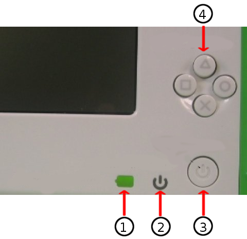

Upgrade all your Software¶
Your XO comes pre-loaded with the software OS (operating system) designed for the XO. It is a good idea to keep your software up to date because our latest builds fix bugs in earlier releases and they are awesome!
The XO-1’s came with Sugar software. Did you know that with the latest software your XO can have both Sugar and GNOME? GNOME provides an option to teach older children in a learning environment that will be familiar and transferable to using Windows or Mac OS. This Chapter will tell you how to upgrade your software.
The Software Releases can be found here: http://wiki.laptop.org/go/Releases
The main page of the OLPC Wiki also contains links to the latest releases. http://wiki.laptop.org
There several methods of upgrading. Which one is right for you? Most people will want to use the “clean install” method. An overview of the upgrade options can be found here. http://wiki.laptop.org/go/Updating_the_XO
Clear instructions on how to to change, upgrade, downgrade, or replace your XO’s OS can be found in the Release notes. Choose the release (build) that you want to install here: http://wiki.laptop.org/go/Releases Next click on the Release notes for the release you will install.
Decide whether you want to do a clean install (Installation) which will completely reformat your XO with files from a USB drive, or an online or offline update which will update the current software without erasing the existing Journal. Follow the instruction for the update method chosen.
A clean install uses a USB stick and the “four button procedure” to begin the update. Warning Reminder: This method re-formats your XO and EVERYTHING on your XO will be deleted if you use this method. You will follow the instructions in the Release Notes for the build chosen, and you will need A USB storage device that has at least 1 GB of space free and a computer with Internet access that will allow you to download the required 300-400MB within about an hour.

1 - Battery indicator
2 - Power indicator
3 - Power button
4 - Game buttons
Follow these steps to upgrade your XO
Connect your XO to its charger.
Turn off your XO.
Connect your prepared USB storage device to your XO.
Next, hold down all four gamepad keys above the power button, and then push the power button to turn the XO on. You will see a message that tells you to “Release the game key to continue”. Do not continue until you see this message.
Release the gamepad keys. The reflash process runs automatically; first you will see the XO arrange and color in a grid of boxes, then the XO will display “Rebooting in 10 seconds…”
The XO will then restart with a clean image.
Enter your name for your XO and then click Next.
Click the XO icon to change the colors and then click Done.
Optionally, connect your XO to the Internet, then use the Control Panel to download the latest Activities.